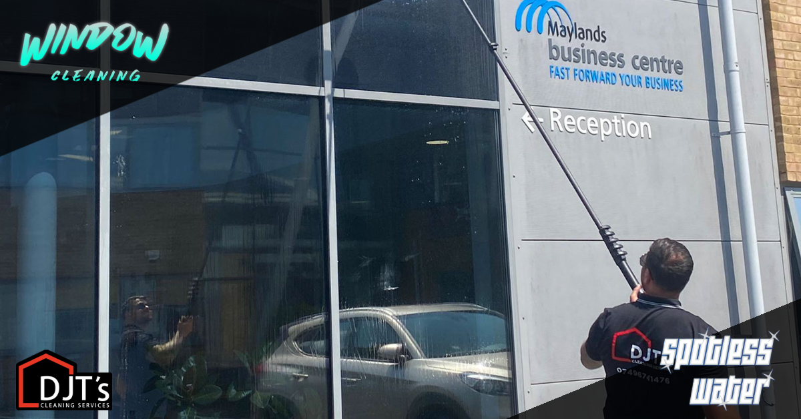
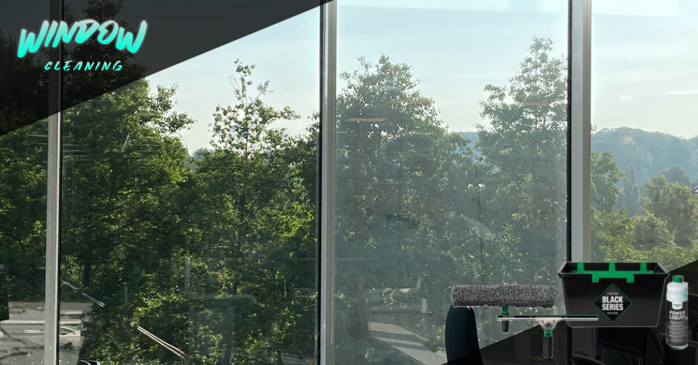

The Importance of Cleaning Windows
When you think about what factors contribute to a successful business, clean windows probably isn’t the first thing that springs to mind.
As windows are part of a building’s exterior, as well as interior, they can often get forgotten about when it comes to cleaning; overlooked as one of those jobs that is on your list to do but you never quite get round to actually doing.
However, you might not know how much damage you are doing to your business and its reputation by not keeping your windows in good condition.
Call Now
3 Reasons For Clean Windows..
Improve Your Properties Curb Appeal
Everyone want’s to have a great looking home, and clean windows will make your home shine. Professional window cleaners can make the job quick and easy, simply schedule regular window cleaning.
Combined with regular exterior cleaning, such a pressure washing, and your home will look always it’s best. Not only is this good for your homes value, clean windows will make your home look great for friends and family alike.
Filter Better Light
Natural light is extremely important when it comes to assessing the needs of your employees. Leave your staff to work in dark and dismal conditions and their morale will soon plummet.
Not being exposed to enough natural light has been linked to feelings of depression and can even be diagnosed as Seasonal Affective Disorder (SAD), when your body begins to suffer from the lack of natural light. Therefore, it’s in your best interests to keep all avenues for natural light clear and free from any type of obstruction.
So there you have it, clean windows reveal much more about your business than you might have first thought.
Clean Windows Prevents Glass Degradation
Acid rain and hard water can cause a build-up of debris on your windows, sills, and window frames. Aside from looking bad, acid rain will damage your home and glass windows over time.
Dirt particles will enter the glass' pores, contaminating and corroding the windows. The first things you may notice will be some light scratches or cracks. Eventually, an unmaintained window can be altered on a structural level and will need a full replacement. Cleaning your windows will prevent this outcome and give your windows far more longevity.
Keeping your windows clean is especially important if you live near a roadway or construction site. Overspray from salting roads or spray paint can be bad for your home. Removing hard minerals is simple when you hire a professional window cleaning service. We have the know-how to use the best cleaning solutions for the job, leaving a smudge and streak-free finish. Most professional offer free quotes so you have nothing to lose by calling.

Window Cleaning Service
If your windows are dirty chances are there’re blocking out natural light and colour of the outdoor world. This can be a depressing. Regardless of whether your view is modest or not, a clear, transparent window is always more enjoyable to look through than a filthy screen. If you plan on selling your home, unclean windows are a turn off for potential buyers. Pristine windows are a sign the home has been well cared for.
Along the same lines as improving your view, clean windows also make a better impression on your guests. No one wants someone to get the wrong idea about them because of some windows, but this is something people get judged for all the time. Those that run a business will certainly want clean windows if they want assert a professional image and impress their clients. Your employees or family may even feel happier since clean windows are known to subconsciously improve people’s moods!
Some people think professional cleaning of windows is only for commercial buildings. But, there are many commercial window cleaning companies that also provide residential service. If you’re considering having your windows cleaned in North London or Hertfordshire, we invite you book an appointment or contact us today for a FREE no obligations quote. We also provide other cleaning services such as pressure washing and gutter cleaning, conservatory cleaning and more.
What's Included?
Free No Obligation Quote

All members of the window cleaning team are ready to provide a free no obligation quote for any type of window cleaning work.
What's Included?
Window Cleaning Services
DJT's Window Cleaning are one of the most trusted and quality window cleaning specialists in the area offering convenient and affordable window cleaning services for residential and commercial property. We pride ourselves on our first class results, reliability and exemplary customer service.
What's Included?
No Job Too Big or Too Small
The window cleaning team provide the same professional service whether it be a small residential windows or a new commercial building.
Call Now